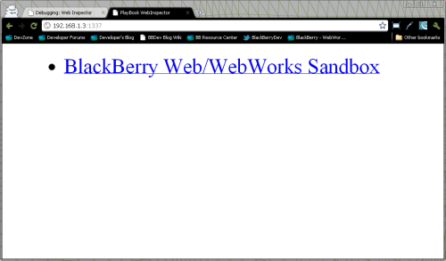
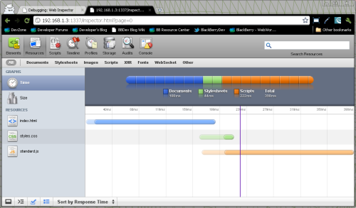

Web Inspector is a debugging and profiling developer tool that is included as part of the WebKit browser rendering engine. It is available for BlackBerry developers to use either in the BlackBerry PlayBook browser, or applications created using the BlackBerry WebWorks SDK for Tablet OS.
Here is how you enable Web Inspector for use in a BlackBerry WebWorks application for Tablet OS:
Blog article: Debugging BlackBerry web applications using Web Inspector .
Web Inspector Enabled:
When you first connect to Web Inspector from a desktop browser, you will see a title screen showing the current page loaded in the WebWorks application.

Using Web Inspector:
You can then click on the title, and begin debugging and profiling that page using the variety of developer utilities provided by Web Inspector:
